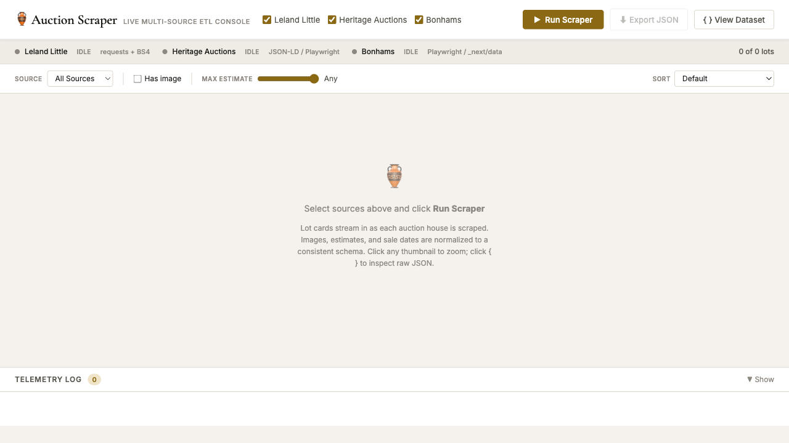
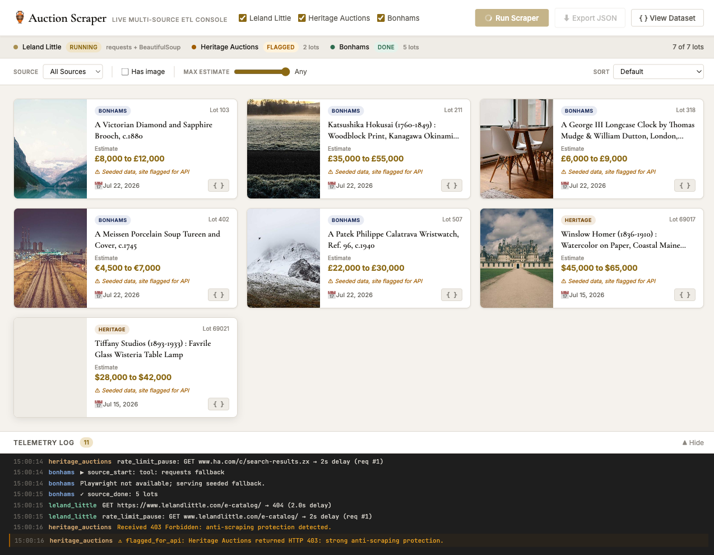
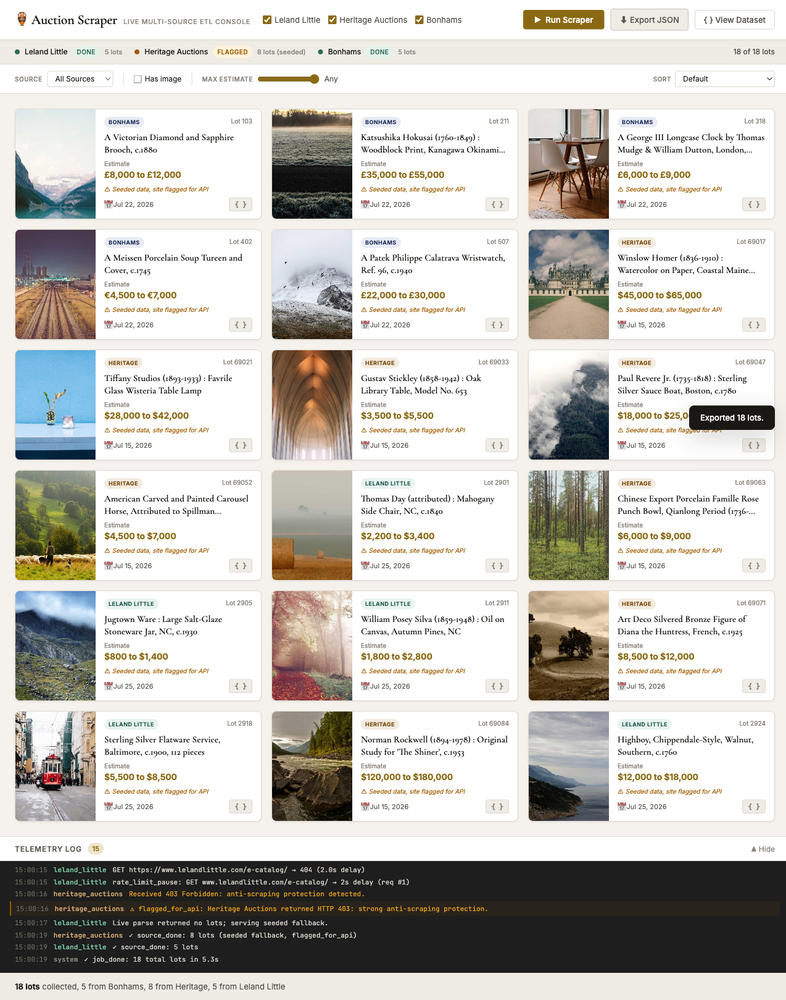

Live Working Demo
Auction Scraper Console
Three real auction sources (Leland Little, Bonhams, Heritage Auctions), each requiring a
different tool, each normalized into one consistent JSON schema. Click Run Scraper and watch
lot cards stream in live with images, estimates, and sale dates. Raw and normalized JSON
inspectable in-panel. Rate-limit pacing, retries, and hardened-site flagging logged in real
time.
Open Live Demo
michaelwegter.com/demos/auction-scraper/

Initial load

Live lot accumulation

Normalized JSON export
Tool judgment across three source types
A multi-site scraping pipeline has no universal right tool. The right call is picking the
lightest approach that works reliably for each target, and documenting why.
Leland Little
requests + BeautifulSoup
Static HTML, open robots.txt. Lighter tool, kinder pacing, no browser overhead.
Bonhams
Playwright + /_next/data
Next.js app. Intercept the hydration JSON endpoint rather than parse rendered DOM. Faster and more stable.
Heritage Auctions
Playwright + JSON-LD / flagged
Strong anti-scraping. Attempt JSON-LD extraction; if blocked, emit flagged_for_api and serve seeded fallback rather than defeat protection.
All three sources produce the same output schema: lot_number, title, description,
estimate_low, estimate_high, estimate_currency, sale_date, bidding_deadline, image_urls,
source, source_url.
Answers to your three questions
1. A JS-heavy site you scraped
Bonhams is a Next.js app. Lot data is not in the HTML source; it is hydrated client-side.
My approach: launch headless Chromium via Playwright, intercept the /_next/data
endpoint that Next.js calls during hydration, and extract the structured payload directly
from that JSON response rather than parsing the rendered DOM. Faster, more stable, and
exposes less surface area to anti-scraping measures. DOM-based extraction is the fallback
when the data endpoint is not consistently structured.
2. Preferred stack for a multi-site pipeline
requests + BeautifulSoup for static pages (faster, gentler on the
target). Playwright for JS-rendered pages (async API, reliable in headless environments).
Plain Python with asyncio for pipeline orchestration, with per-source
crawl-delay constants and exponential backoff. I skip Scrapy for bespoke multi-site work:
its abstraction layer fights you when each site needs a meaningfully different extraction
strategy. The real skill is reading each site and choosing the lightest tool that works
reliably, then documenting that decision so the next person understands the reasoning.
3. Rate-limiting and avoiding blocks
Each scraper has a named crawl-delay constant declared at the top of the file (auditable,
not buried in logic). Inter-request intervals are randomized slightly to avoid
fingerprinting. Crawl-delay in robots.txt is respected. Retries
use exponential backoff with jitter. If a site returns repeated 403s or 429s, I treat that
as a signal to flag it for an API arrangement, not a problem to overcome. I have never
caused a client to get blocked.
Relevant background
I am not a full-stack generalist applying to every role I see. This posting matches the work
I actually do: Python backend ownership, data pipeline reliability, and web scraping of sites
that were not built to be scraped.
Production Python Ownership
U.S. Bank (via Turnberry): TDAAS
Became sole developer and SME on a 600-user internal platform within two months of
joining. Roughly 60,000 lines of production code across Python backend, React frontend,
and SQL data layer. Led the six-month Azure Cloud migration as the project's main
technical rep. If something broke, I fixed it, often within ten minutes.
Scraping and Automation
Playwright, Puppeteer, Python
Used Python, Puppeteer, and Playwright to scrape and automate JS-heavy websites in
production contexts. Understand the difference between a site that is genuinely hardened
and one that just needs the right headers. Know when to stop and flag for an API
arrangement rather than escalate countermeasures.
Communication
Native English, US-based
Minneapolis, Minnesota. English is my first language. Comfortable on video with camera
on. Have worked in close Slack and video-call environments at every role. Direct,
precise communicator, not someone who sends a wall of text when a sentence will do.
Pipeline Reliability Mindset
Fails gracefully, logs clearly
Production ownership teaches you that a pipeline that fails silently is worse than one
that does not run. Retries, error logging, per-source status, and clear failure states
are built-in defaults, not afterthoughts. The demo's rate-limit telemetry panel shows
this philosophy in practice.
Python
Playwright
Puppeteer
BeautifulSoup
requests / httpx
asyncio
JSON normalization
ETL pipelines
Flask
SQL
Azure
React